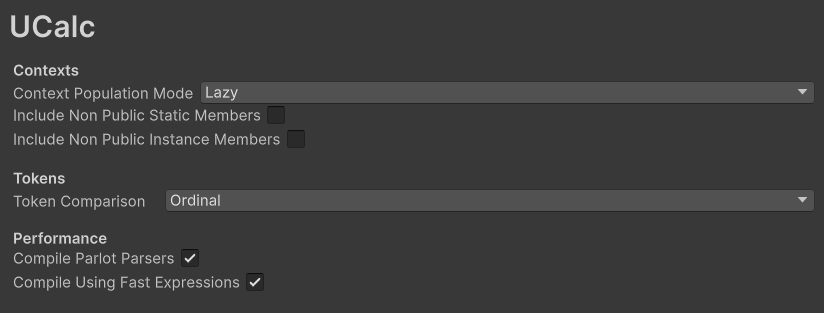

Controlling Symbol Discovery
UCalc automatically discovers symbols from types and exposes them to expressions.
In most cases the default behavior works well, but you can customize it in several ways.
Hiding Members
If a member should not be visible inside expressions, add the UCalcHidden attribute.
public class Character
{
public float Health;
[UCalcHidden]
public int InternalState;
}
The InternalState field will not appear in autocomplete and cannot be accessed in expressions.
This works for:
fields
properties
methods
Making Members Read-Only
If a field or property should be accessible but not writable, use the UCalcReadOnly attribute.
public class Character
{
[UCalcReadOnly]
public float MaxHealth;
}
Expressions can read the value:
MaxHealth
But assignments to the member will not be allowed.
Project Settings
Additional symbol discovery behavior can be configured in Project Settings → UCalc.

Available options include:
Include non-public instance members
Include non-public static members
These settings control whether private, protected and internal members are considered during symbol discovery.
Custom Member Filters
For more advanced control, you can register custom filters that determine which members are exposed.
This is done by implementing the IUCalcMemberFilter interface.
public class MyFilter : IUCalcMemberFilter
{
public bool AllowField(TypeContext ctx, FieldInfo field)
{
return !field.Name.StartsWith("_");
}
public bool AllowProperty(TypeContext ctx, PropertyInfo prop)
{
return true;
}
public bool AllowMethod(TypeContext ctx, MethodInfo method)
{
return true;
}
}
Then register the filter through UCalcMemberFilterRegistry.
UCalcMemberFilterRegistry.AddGlobalMemberFilter(new MyFilter());
You can also register filters for a specific type:
UCalcMemberFilterRegistry.AddTypeMemberFilter(typeof(MyType), new MyFilter());
Initialization Timing
Filters should be registered early during initialization.
This ensures they are applied before symbol discovery runs for a given type.
Good places to register filters include:
static initialization
editor initialization methods
runtime startup code
If symbol discovery already happened for a type, your filter may not affect that cached context.
When Should You Use Custom Filters?
Custom filters are useful when you want to:
hide members based on naming conventions
restrict certain types
expose only a limited API to designers
implement project-specific safety rules